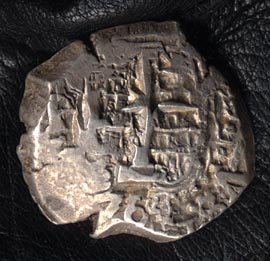
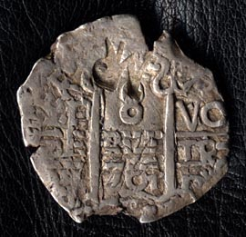
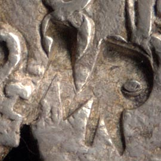

1764 Cob with the Mozambique Countermark, MR
Silver (AR) 8 Reales
New World origin, probably minted in Peru or Mexico
Countermarked in Mozambique, probably 1767

Obverse (large image)

Reverse (large image)

MR Countermark detail.
Definitions:
Cob Money :: Crude irregular silver coins of Spain, Central and South America.
Countermark (a.k.a. counterstamp) :: A mark impressed on a coin to verify its use by another government, or to indicate revaluation.
Californios Home Page